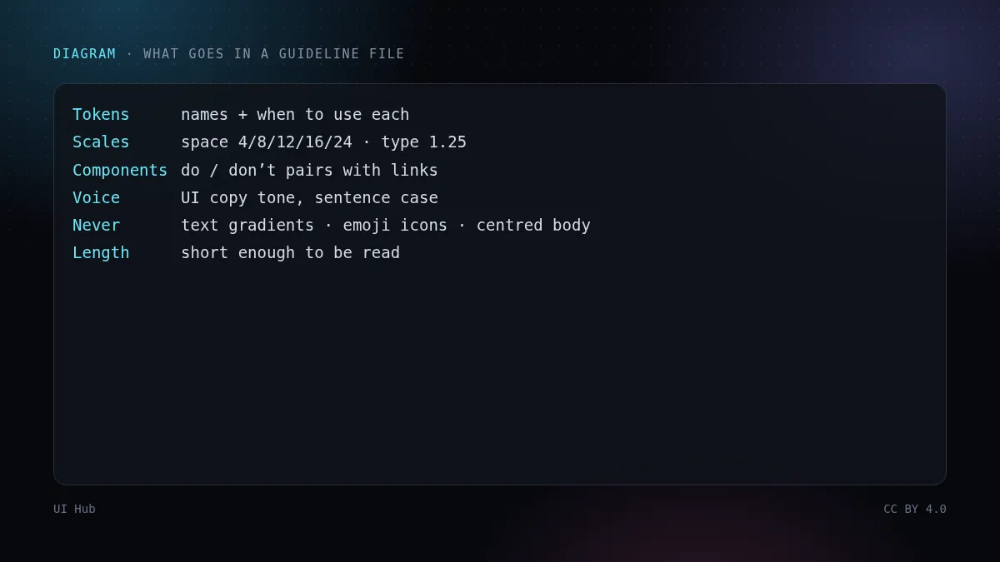
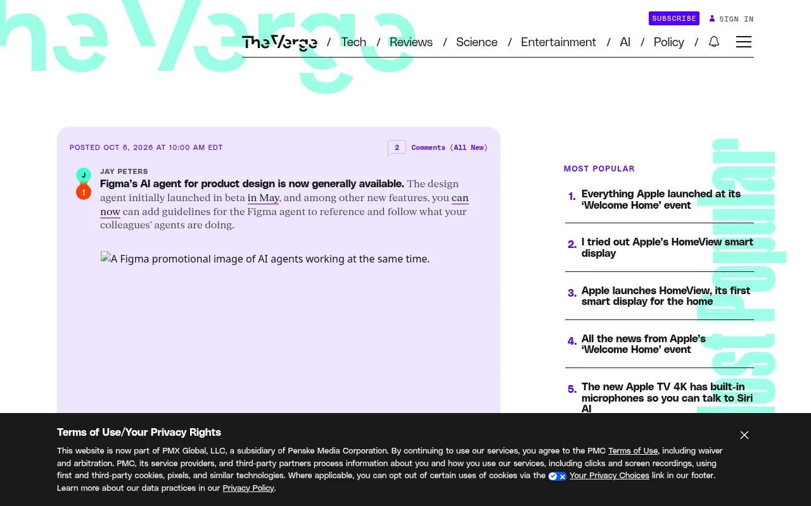

Figma Make 在 Config 2025 上推出，能根据提示生成可交互原型和简单应用，也可以从现有的 Figma 画框开始。它回答了设计师对 v0 这类工具一直在问的问题：「能不能在我的设计稿所在的地方做？」
2026 年 10 月 6 日，Figma 的产品设计智能体结束 5 月开始的测试，正式可用。报道中有两点特别值得注意：组件库所有者可以提供规范文件（Markdown），启用该库时智能体就会读取；队友可以在画布上实时看到智能体在做什么。


Token 名称及各自的用途；间距和字号阶梯；组件的「该做/不该做」对照；界面文案的语气；一份简短的「禁止」清单（不用渐变文字、不用 emoji 当图标、正文不居中）。写得足够短，审阅的人才会真的读；能放示例链接就别用文字描述。本站百科里的规范摘要可以当起步模板。